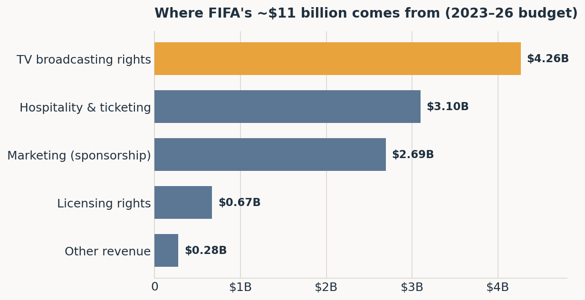
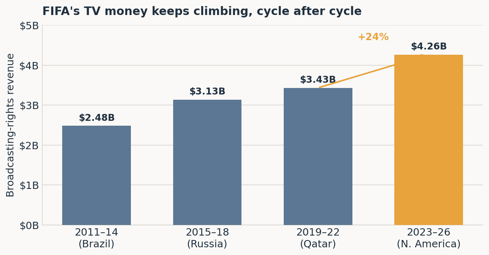
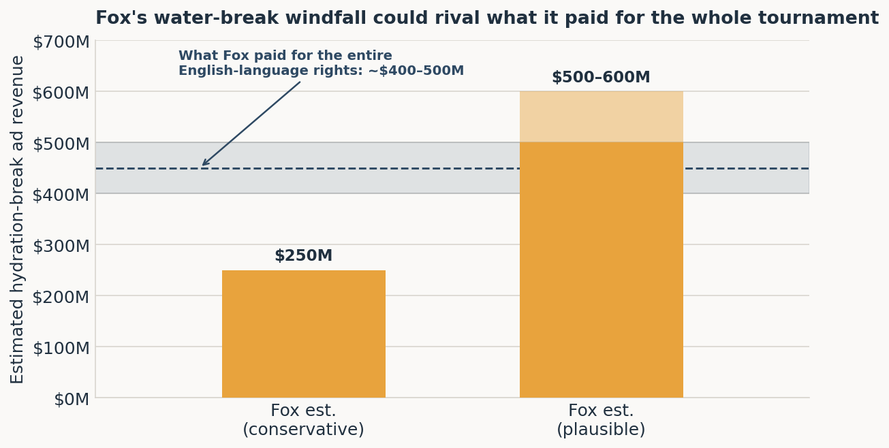

FIFA Discovered the Commercial Break
American sports fans have spent their whole lives being trained to expect a break. The NFL has the two-minute warning and roughly a hundred stoppages. The NBA has quarters, timeouts, and a coach’s challenge that exists mostly so the network can sell you a truck. Soccer, famously, has none of this. Ninety minutes, two halves, one clock that never stops and never lies. You cannot cut to a car commercial mid-move, because there is no mid-move — the ball is always live.
This has always been a small tragedy for the people who sell advertising.
At the 2026 World Cup, that tragedy quietly ended. FIFA introduced a mandatory three-minute hydration break in each half of every match — around the 22nd minute and again around the 67th — regardless of the weather (FIFA). The stated reason is player welfare, and in the summer heat of Kansas City and Dallas, that reason is real. But if you squint at the timing, the structure, and the money, something else comes into focus: FIFA just gave the world’s most-watched sport its first built-in commercial break — and handed broadcasters a new pile of inventory to sell.
Let me walk through where FIFA’s money actually comes from, why television is the tail that wags the entire dog, and how a water break becomes a billion-dollar idea.
Where FIFA’s Money Actually Comes From
First, a myth to dispose of: FIFA does not primarily make its money from ticket sales, or from that overpriced beer at the stadium, or from selling jerseys. FIFA makes its money from selling the right to broadcast the World Cup, and secondarily from selling the right to associate your brand with the World Cup. Everything else is a rounding error by comparison.
Here is the budgeted revenue for the 2023–2026 cycle, which is how FIFA keeps its books (it thinks in four-year chunks anchored on a World Cup, not calendar years):

| Revenue source | 2023–26 budget | Share |
|---|---|---|
| TV broadcasting rights | $4.26B | 39% |
| Hospitality & ticketing | $3.10B | 28% |
| Marketing (sponsorship) | $2.69B | 24% |
| Licensing rights | $0.67B | 6% |
| Other | $0.28B | 3% |
| Total | $11.00B | 100% |
Two lines do almost two-thirds of the work: television and sponsorship. And these two are not independent — they are joined at the hip. A sponsor pays FIFA to put its logo where a billion people will see it, and the reason a billion people see it is television. Broadcasters pay for the audience; sponsors pay for access to that same audience. TV is the product, and everything else is priced off it.
Which is why the most important number on FIFA’s income statement is the one at the top — and why FIFA spends so much energy making that number bigger.
The Number That Never Stops Climbing
FIFA’s broadcasting revenue has gone up every single cycle, through scandal, through a pandemic, through a widely disliked Qatar tournament played in November. It is one of the most reliable upward-sloping lines in global media.

The 2026 tournament turbocharges this for reasons that have nothing to do with hydration:
- It’s bigger. The field expanded from 32 teams to 48, and the match count ballooned from 64 to 104. More matches means more broadcast hours means more inventory to sell.
- It’s in the right time zones. After Qatar’s inconvenient kickoffs, the 2026 tournament is hosted across the United States, Canada, and Mexico — meaning matches land in North American prime time and afternoon slots, the most valuable advertising windows on Earth.
- The rights got more expensive. Industry estimates put the value of the 2026 TV rights 20–30% above Qatar 2022 (Rio Times). Fox reportedly paid $400–500 million for the English-language U.S. package alone.
Now hold that Fox number — $400–500 million for the whole tournament — in your head. We are about to compare it to something absurd.
The Other Half: Renting Out the Logo
If television is FIFA selling the audience, sponsorship is FIFA selling access to that audience — and it is sold, appropriately, as a pyramid. The higher you climb, the more exclusive the air and the thinner your wallet gets afterward.
| Tier | What you get | Est. price | Examples (2026) |
|---|---|---|---|
| FIFA Partners | Year-round rights across every FIFA competition; top billing | ~$150–200M | adidas, Coca-Cola, Visa, Hyundai-Kia, Lenovo, Qatar Airways, Aramco |
| World Cup Sponsors | Rights to this tournament, worldwide | ~$65–95M | Budweiser, McDonald’s, Bank of America, Lay’s, Verizon, Unilever |
| Regional Supporters | Rights within one region only | ~$10–25M | Regional brands across North America |
The economics of the pyramid are ruthless and clever. There are only seven FIFA Partner slots, and that scarcity is the entire point — an adidas or a Visa is not really paying for a logo on a billboard, it is paying to keep a competitor off it. When Nike cannot be a FIFA Partner because adidas already is, the price adidas will pay to hold that exclusivity goes up. FIFA has monetized not just the space on the field but the absence of your rival from it.
And the pyramid, too, is ultimately priced off television. A World Cup Sponsor is buying pitchside LED boards, digital overlays, and the implied blessing of the tournament — all of which are worth precisely as much as the number of eyeballs the broadcast delivers. FIFA confirmed in March 2026 that all sixteen of its global sponsorship packages had sold out (Forbes), and total brand spending around the tournament — sponsorship plus the advertising that rides on it — is estimated north of $10 billion.
So both of FIFA’s big revenue lines, television and sponsorship, are really the same bet placed twice: how many people are watching, for how long, with how much attention? Anything that increases watching-time, or creates a fresh, attention-grabbing moment to sell, makes both lines go up at once.
Which is a very useful lens for thinking about a brand-new, perfectly-timed, guaranteed three-minute pause in the action.
Enter the Water Break
Here is the mechanical genius of the hydration break, from a television executive’s point of view.
Before 2026, cooling breaks existed, but only as an emergency measure. They were introduced at the 2014 World Cup in Brazil and could be called only when a heat index (WBGT) crossed a defined threshold (Kestrel Instruments). They were unpredictable. You could not sell an advertiser a slot that might or might not exist depending on the humidity in Rotterdam. Unpredictable inventory is nearly worthless inventory.
The 2026 rule changes exactly one thing, and it is the thing that matters: the breaks are now mandatory in every match, at a roughly fixed time, regardless of weather (Fox News / OutKick). Suddenly the inventory is guaranteed. An ad buyer can be promised a national commercial pod around minute 22 and minute 67 of a match watched by tens of millions of people, and the buyer can budget for it a year in advance. That is the difference between a puddle and a pipeline.
And notice what the schedule does to the shape of the game. A break at ~22 minutes and ~67 minutes carves each half neatly in two, turning a game of two 45-minute halves into something much more familiar to an American audience:
| Old soccer | New (2026) | |
|---|---|---|
| Structure | Two 45-min halves | Four ~22-min “quarters” |
| Guaranteed stoppages | Halftime only | Halftime + 2 hydration breaks |
| Weather condition | Cooling break only if hot | Break every match, always |
| Sellable in-game ad pods | 0 | 2 per match × 104 matches |
France manager Didier Deschamps said it out loud: “It’s not two halftimes, it’s four quarter times… the players and the coaches adapt to this new reality” (ESPN). He meant it tactically. But “four quarters” is also, conveniently, the exact structure of the NBA and NFL broadcasts that American advertisers have optimized around for fifty years.
The Billion-Dollar Puddle
So what is a guaranteed in-game ad pod at the World Cup actually worth? The honest answer is that nobody knows precisely, because this is the first tournament with the inventory and FIFA and the broadcasters aren’t publishing the receipts. But the published estimates are eye-watering, and they cluster in a consistent range.
Analysts peg a single 30-second spot during a hydration break at $200,000 to $750,000, depending on the teams and the stage of the tournament, which works out to roughly $2.5 million to $9 million per match in fresh ad time across the two breaks (The Hollywood Reporter). Multiply across 104 matches and the estimates for Fox alone land at “at least $250 million, plausibly $500–600 million” (The Hollywood Reporter). Some global estimates, summing every broadcast market, run past $1 billion (Rio Times).
Here is the punchline in one chart:

Read that again. Fox paid roughly $400–500 million for the rights to broadcast the entire tournament. The advertising revenue from the hydration breaks alone — three minutes, twice a match — is estimated to plausibly reach $500–600 million. The garnish may be worth more than the meal.
And this compounds in FIFA’s favor on the next turn of the wheel. Broadcasters bid for rights based on how much money they can make from those rights. If the hydration break just made Fox’s package meaningfully more profitable, then the next rights auction starts from a higher floor. FIFA doesn’t even have to sell the ads itself — it simply raises the rent on the broadcasters who do. The water break pays FIFA twice: once by making the current tournament more valuable to Fox, and again by making the next set of rights more expensive.
To Be Fair to the Water
It would be too cynical — even for me — to claim this is only about money. Two things are true at once.
The player-welfare case is genuine. The 2026 tournament is being played in brutal conditions; matches in Kansas City, Dallas, and Monterrey have kicked off in temperatures well into the 90s Fahrenheit, and the 2025 Club World Cup (a dry run for all of this) featured genuinely dangerous heat. Giving players a structured chance to rehydrate is defensible sports science, and FIFA frames it exactly that way (FIFA).
But the criticism is also genuine, and it comes from two directions:
- The scientists say three minutes is too short to meaningfully cool a body running at full exertion in extreme heat — useful, but more gesture than remedy when it’s truly sweltering (ESPN).
- The coaches say the breaks distort the game. USWNT coach Emma Hayes calls them “momentum breaks” — a free tactical reset handed to whichever team is being outplayed (ESPN). Early tournament data hints she has a point: a striking share of goals arrived shortly after a break, when one side had just been allowed to regroup and re-instruct.
Notice that the strongest argument for the breaks (heat safety) would justify the old rule — call a break when it’s hot. It does not obviously justify the new rule — call a break in every match, including a temperate evening in Vancouver. The delta between “break when it’s hot” and “break always” is precisely the part that isn’t about hydration. That delta is the part you can sell.
The Tell
If you want to know what a rule is really for, watch who opts out.
The purest evidence that the hydration break is now an advertising vehicle is that some broadcasters are treating it as one — and a few are conspicuously refusing. In the U.S., Spanish-language broadcaster Telemundo declined to cut to commercials during the breaks, staying with studio analysis instead; U.K. broadcaster ITV did the same (ESPN). You do not have to make a principled decision about whether to run ads during a genuine medical timeout. You only face that decision if the “medical timeout” has quietly become the most valuable ninety seconds of unsold airtime in the building.
FIFA has spent a decade proving that its revenue line only points one way, and it has done it by relentlessly finding new surfaces to sell. It expanded the field to 48 teams. It moved the tournament into American prime time. It launched a 32-team Club World Cup out of thin air. The hydration break is the same instinct applied to the one piece of the product that had always resisted it: the ninety uninterrupted minutes themselves.
So drink up. Somewhere, an accountant is very, very hydrated.
Revenue figures are from FIFA’s own budget and financial statements, linked inline. Advertising figures for the hydration breaks are analyst and press estimates, not official FIFA or broadcaster disclosures, and should be read as such. All charts are the author’s own, built from the cited data. No copyrighted imagery is used.